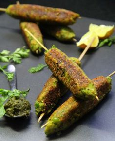

The ‘sheekh kebabs’ are a signature Indian recipe which is a definite crowd pleaser on special occasions.

Ingredients
1 cup fresh grean peas
½ cup soaked soy granules
1 medium size potato, boiled and peeled
2 green chillies
Ginger
Handful of fresh coriander leaves
½ tsp cumin powder
½ tsp dry coriander seed powder
1/4th tsp black pepper powder
A pinch of garam masala
1 slice of bread, made into crumbs
Salt to taste
2 tbsp vegetable oil
Method
Boil green peas with a little salt, drain and spread on a towel to remove all excess water.
Slit, deseed and finely chop the green chillies, also finely chop a tbsp full of ginger and the entire coriander leaves.
In a mixing bowl grate the boiled potato, squeeze all water from the soy granules by pressing between your palm and green peas simultaneously and add to the potato.
Then add the chopped chillies, ginger, coriander leaves, cumin powder, salt to taste, coriander powder, pepper powder, garam masala and mix well to incorporate everything together.
Then add the bread crumbs and mix it well, divide the mixture into 6 equal parts.
Now moisten your palm and press each part along the length of a skewer to make each kebab approx 5 inch in length.
Now, these skewers can be either roasted in a hot tandoor for 7-8 minutes or a hot grill for the same amount of time.
Alternatively, deep fry or you may choose to simply pan grill it like us, read on to see how.
Heat large flat frying pan, diameter enough for the entire length of the skewer to fit in. Brush with a tbsp of oil and grill in two batches, rolling on all sides untill golden all around.
Serve hot with our favourite green chutney and tomato ketchup.